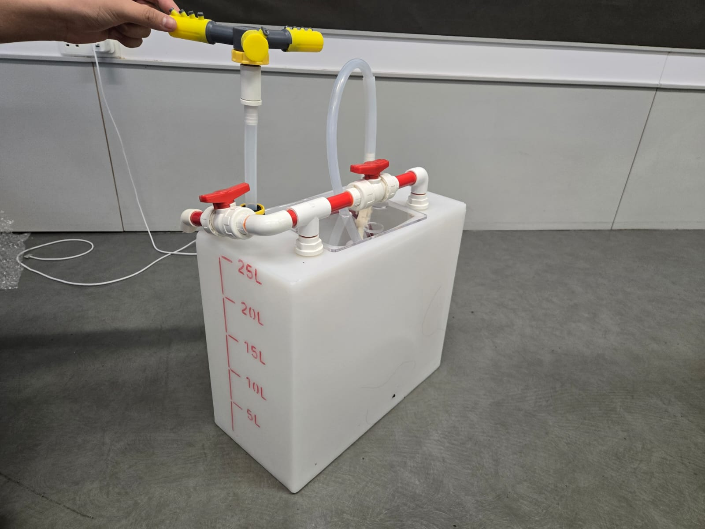
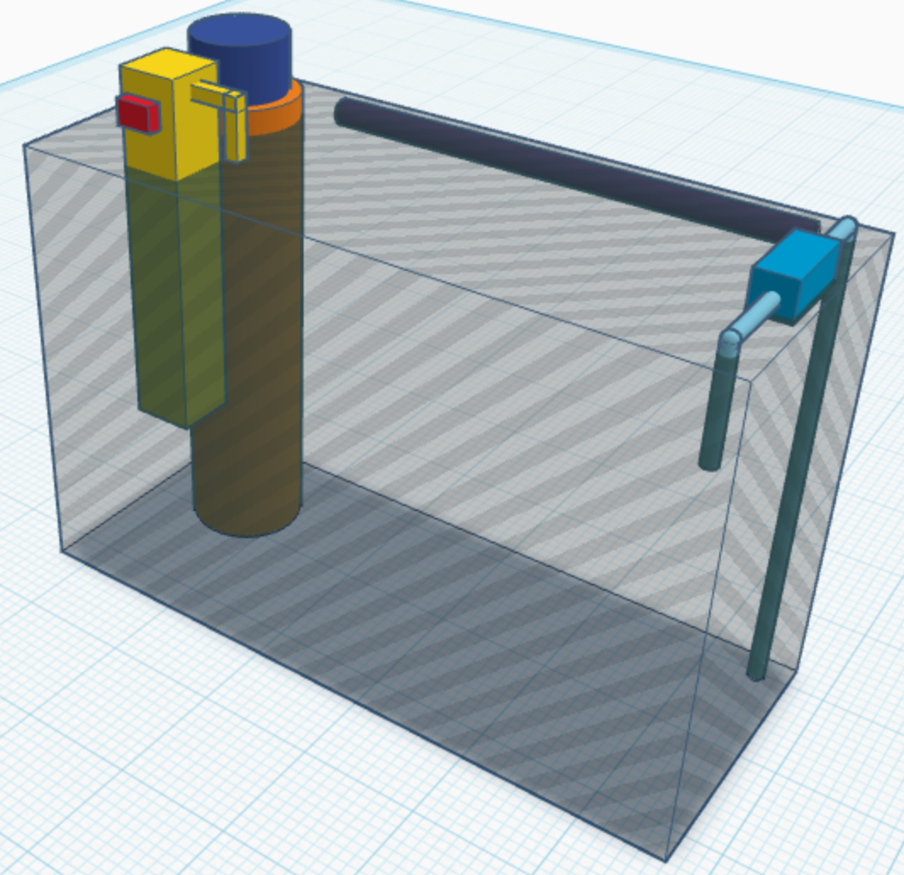

Welcome to Our Shoe Cleaner Calculator
 Our shoe cleaner machine is designed to clean your footwear efficiently without damaging the material. It consists of a water tank, a scrub brush connected to an electric motor, and a pump connected to a filter. Detergent, water and the shoe are added to the tank. As the scrub brush spins, the water flows, creating a foam covering the shoe. As the shoe gets cleaned, dirt is filtered as the pump constantly pumps water through the filter.
As different shoes have different sizes and materials, this requires different amounts of detergent. We proudly present our shoe cleaner calculator, Just input the measurements and material of your shoe, and we can tell you the volume of each liquid and motor settings.
Liquids used: Detergent (floor cleaner), Alcohol, Fragrance, Water